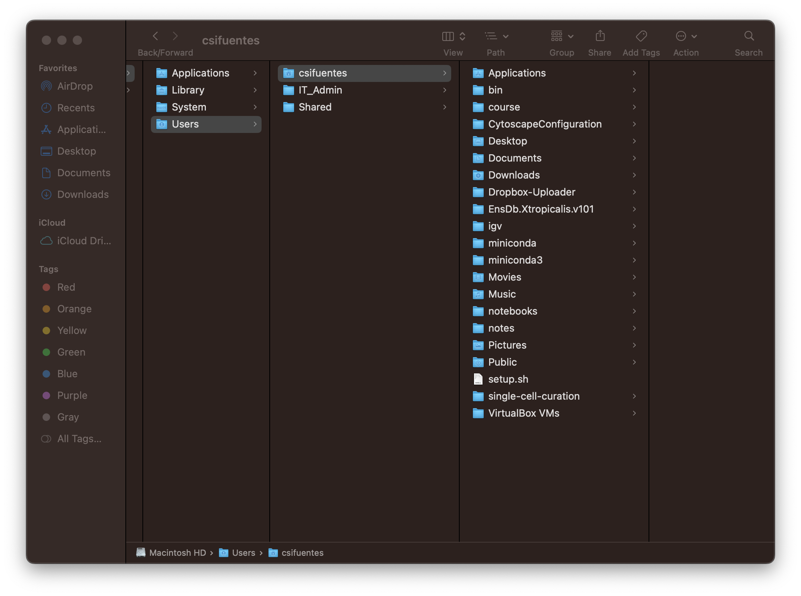

The File System
A Common Structure
The file system manages and organizes our files and directories using a common structure defined by:
Parent-child relationships
A “family tree” (more like a root system) of “parent” and “child” relationships (Figure 1a).Directionality
Parent items are at the top/up; child items are at the bottom/ down (Figure 1a).Different ways to access
Accessible via command-line (Figure 1b) and GUI (Figure 1c).



The top-most directory is called the root directory and is shown with the /.
Paths
The directories, files, and subdirectories of a file system are connected by paths. Paths also describe the locations within the file system.

/ to mouse.gtf, highlighted in red.Absolute and Relative Paths
There are two types of paths:
- Absolute path
The path taken from the top-most directory (root,/), to the specified file or directory. The absolute path always starts with/. - Relative path
The path taken from the present working directory to the specified file or directory.
Example paths to a few items from Figure 1a are shown below.
| Target | Absolute Path | Relative Path (from the /bin directory) |
|---|---|---|
plot.R |
/bin/plot.R |
plot.R |
conda |
/bin/conda |
conda |
., .., and ~ aliases
The characters ., .. and ~ have special meaning in the unix shells.
.– Current directory..– Parent directory~– Users home directory
For example the following code means to do_the_thing in the current directory.
do_the_thing ./The code below means to do_the_thing two directories above our current directory.
do_the_thing ../../Finally, the code below means to do_the_thing in the user’s home directory.
do_the_thing ~Q&A: If we are in the /tmp directory, what are the absolute and relative paths of the genome.fa file?
Working in the File System
Now let’s learn some useful ways to work in the file system.
Text Editors
Allow one to create and edit text files
- using plain characters only, unlike MS Word and Google Docs
- varying easy of use and capability of the text editors
- can use in-terminal (in the shell) or GUI (external)
| In-Terminal Examples | GUI Examples |
|---|---|
pico, nano |
notepad, notepad++ |
emacs, Vim |
Atom, Visual Studio Code |

nano
Visual Studio CodeContinuing with our thesis work, let’s create a README.txt file to keep track of each chapter directory.
nano – in-line text editor
Opens the editor into a file (or new file if it doesn’t exist).
Note: Creates the target file if it does not already exist. Flags and arguments are optional here.
| Command | Options/Flags | Arguments |
|---|---|---|
nano |
flags |
path/to/file |
Let’s create the README.txt file in our thesis directory.
nano ~/Desktop/shell-lesson-data/thesis/README.txtA file will open in the editor. Follow the directions in Figure 4 below.

README.txt using the nano editor.Looking in thesis, we see our new file.
ls ~/Desktop/shell-lesson-data/thesisREADME.txt
chapter_1
chapter_2
chapter_3
chapter_4
chapter_5cp – copy
Copies and pastes items with a single command.
| Command | Options/Flags | Arguments |
|---|---|---|
cp |
flags |
path/to/source path/to/destination |
It might be nice to have a README in each chapter directory. Let’s use the cp command to do this.
# copy to each chapter directory
cp thesis/README.txt thesis/chapter_1/
cp thesis/README.txt thesis/chapter_2/
cp thesis/README.txt thesis/chapter_3/
cp thesis/README.txt thesis/chapter_4/
cp thesis/README.txt thesis/chapter_5/
# view the structure of thesis
tree thesisthesis
├── README.txt
├── chapter_1
│ ├── README.txt
│ ├── data
│ ├── images
│ └── text
├── chapter_2
│ ├── README.txt
│ ├── data
│ ├── images
│ └── text
├── chapter_3
│ ├── README.txt
│ ├── data
│ ├── images
│ └── text
├── chapter_4
│ ├── README.txt
│ ├── data
│ ├── images
│ └── text
└── chapter_5
├── README.txt
├── data
├── images
└── text
20 directories, 6 filesThis was tedious. Don’t worry, we’ll learn more efficient ways to do this.
mv – move and rename
Moves and renames items, including files and directories. Note that the last argument is the destination.
| Command | Options/Flags | Arguments |
|---|---|---|
mv |
flags |
path/to/source path/to/other/source path/to/destination |
The mv command will overwrite a files without warning!
- use the
-nflag to prevent overwriting existing files - use the
-iflag to prompt for confirmation before overwriting existing files
Let’s rename the README.txt file in the chapter 1 directory so that it contains the chapter number.
# rename the file
mv thesis/chapter_1/README.txt thesis/chapter_1/README_1.txt
# list files in chapter 1
ls thesis/chapter_1README_1.txt
data
images
textrm – remove
Deletes the specified target.
| Command | Options/Flags | Arguments |
|---|---|---|
rm |
flags |
path/to/target |
Unlike in the GUI, rm deletes items permanently!
- use the
-rflag to remove files and directories recursively - use the
-iflag to prompt for confirmation before deleting each item
For fun, let’s remove the thesis directory.
# remove the items (files and directories) recursively
rm -r thesis
# list items in shell-lesson-data
lsexercise-data
north-pacific-gyreIntroducing Wildcards
Wildcards represent 0 or more characters and are used for pattern matching.
*– 0 or more characters
?– exactly 1 character
Let’s see some examples with of each. From our shell-lesson-data/exercise-data/proteins.
Listing all files.
# cd into the directory
cd ~/Desktop/shell-lesson-data/exercise-data/proteins
# list all files in proteins
ls cubane.pdb
ethane.pdb
methane.pdb
octane.pdb
pentane.pdb
propane.pdbListing files ending in ethane.pdb, using *. Note that we use the * at the end becuase all files have the same .pdb ending, so this is faster.
# cd into the directory
cd ~/Desktop/shell-lesson-data/exercise-data/proteins
ls *ethane.*ethane.pdb
methane.pdbListing files ending in ethane.pdb with a preceeding character, using ?.
# cd into the directory
cd ~/Desktop/shell-lesson-data/exercise-data/proteins
ls ?ethane.*methane.pdbAs shown above, wildcards can be used together and combined in different ways to form complex patterns.
For example, we can use ???ane.pdb together to indicate any 3 characters followed by ane.pdb.
# cd into the directory
cd ~/Desktop/shell-lesson-data/exercise-data/proteins
# list all files with 3 characters followed by ane.pdb
ls ???ane.pdbcubane.pdb
ethane.pdb
octane.pdbQuiz Time
Question 1:
Starting from /Users/amanda/data, which command(s) whould take Amanda to her home directory (/Users/amanda)?
Question 2:
With the file system shown, if pwd displays Users/thing, what will ls -F ../backup display?
Note: -F adds a / to the end of directories.

../backup: No such file or directory2012-12-01 2013-01-08 2013-01-272012-12-01/ 2013-01-08/ 2013-01-27/original/ pnas_final/ pnas_sub/
Question 3:
With the file system below, if pwd displays /Users/backup and ls -r displays items in reverse order, what command(s) will result in the following output?
pnas_sub/ pnas_final/ original/
ls pwdls -r -Fls -r -F /Users/backup
Question 4:
Chris runs the following commands and realizes that sucrose.dat and maltose.dat should be in the raw/ directory.
$ ls -F
analyzed/ raw/
$ ls -F analyzed
fructose.dat glucose.dat maltose.dat sucrose.dat
$ cd analyzedComplete the command below to move these files into the raw/ directory.
$ mv sucrose.dat maltose.dat _____/____Question 5:
Chris gave you a file named file.txt, which contains a list of his favorite animals. You want to rename it to why_do_i_need_this.txt. Which of the following commands would do the trick?
cp file.txt why_do_i_need_this.txtmv file.txt why_do_i_need_this.txtmv file.txt .cp file.txt .
Question 6:
What is the output of the final ls command in the sequence shown below?
$ pwd
/Users/jamie/data
$ ls
proteins.dat
$ mkdir recombined
$ mv proteins.dat recombined/
$ cp recombined/proteins.dat ../proteins-saved.dat
$ lsproteins-saved.dat recombinedrecombinedproteins.dat recombinedproteins-saved.dat
Question 7:
Chris accidentally removed a file named important_file.txt. How can the file be retrieved?
rm --undo- “^Z”, control+Z
- Restore from the “Trash” bin
- It can’t.
Question 8:
When run the in proteins/ directory, which command(s) will produce the output below?
ethane.pdb methane.pdb
ls *t*ane.pdbls *t?ne.*ls *t??ne.pdbls ethane.*
Question 9:
Sam has the following diretory structure.
.
├── 2015-10-23-calibration.txt
├── 2015-10-23-dataset1.txt
├── 2015-10-23-dataset2.txt
├── 2015-10-23-dataset_overview.txt
├── 2015-10-26-calibration.txt
├── 2015-10-26-dataset1.txt
├── 2015-10-26-dataset2.txt
├── 2015-10-26-dataset_overview.txt
├── 2015-11-23-calibration.txt
├── 2015-11-23-dataset1.txt
├── 2015-11-23-dataset2.txt
├── 2015-11-23-dataset_overview.txt
├── backup
│ ├── calibration
│ └── datasets
└── send_to_bob
├── all_datasets_created_on_a_23rd
└── all_november_filesSam uses the following commands to create a backup directory and another directory to send to her collaborator, Bob.
$ cp *dataset* backup/datasets
$ cp ____calibration____ backup/calibration
$ cp 2015-____-____ send_to_bob/all_november_files/
$ cp ____ send_to_bob/all_datasets_created_on_a_23rd/Help Sam by filling in the blanks so that the resulting structure looks like this.
.
├── 2015-10-23-calibration.txt
├── 2015-10-23-dataset1.txt
├── 2015-10-23-dataset2.txt
├── 2015-10-23-dataset_overview.txt
├── 2015-10-26-calibration.txt
├── 2015-10-26-dataset1.txt
├── 2015-10-26-dataset2.txt
├── 2015-10-26-dataset_overview.txt
├── 2015-11-23-calibration.txt
├── 2015-11-23-dataset1.txt
├── 2015-11-23-dataset2.txt
├── 2015-11-23-dataset_overview.txt
├── backup
│ ├── calibration
│ │ ├── 2015-10-23-calibration.txt
│ │ ├── 2015-10-26-calibration.txt
│ │ └── 2015-11-23-calibration.txt
│ └── datasets
│ ├── 2015-10-23-dataset1.txt
│ ├── 2015-10-23-dataset2.txt
│ ├── 2015-10-23-dataset_overview.txt
│ ├── 2015-10-26-dataset1.txt
│ ├── 2015-10-26-dataset2.txt
│ ├── 2015-10-26-dataset_overview.txt
│ ├── 2015-11-23-dataset1.txt
│ ├── 2015-11-23-dataset2.txt
│ └── 2015-11-23-dataset_overview.txt
└── send_to_bob
├── all_datasets_created_on_a_23rd
│ ├── 2015-10-23-dataset1.txt
│ ├── 2015-10-23-dataset2.txt
│ ├── 2015-10-23-dataset_overview.txt
│ ├── 2015-11-23-dataset1.txt
│ ├── 2015-11-23-dataset2.txt
│ └── 2015-11-23-dataset_overview.txt
└── all_november_files
├── 2015-11-23-calibration.txt
├── 2015-11-23-dataset1.txt
├── 2015-11-23-dataset2.txt
└── 2015-11-23-dataset_overview.txt